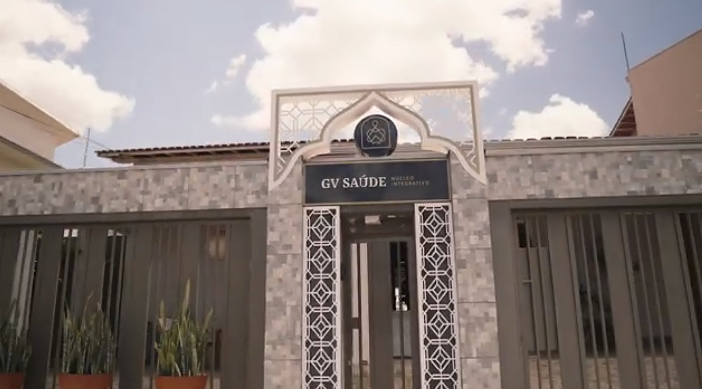
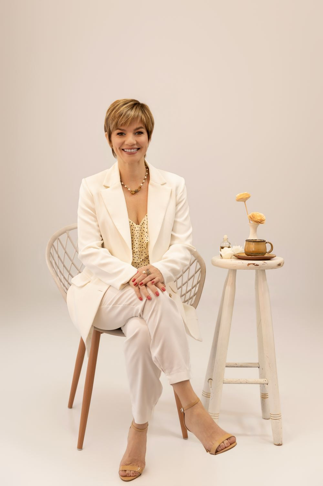
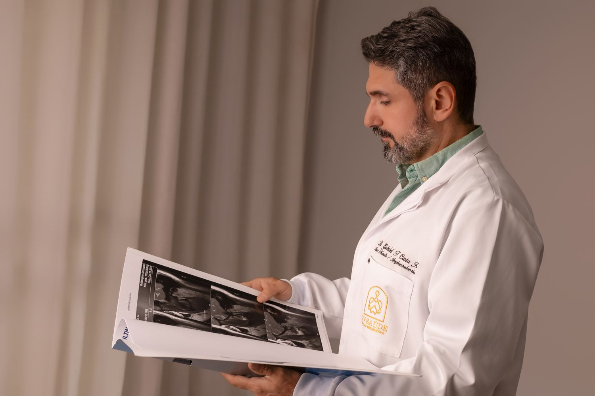
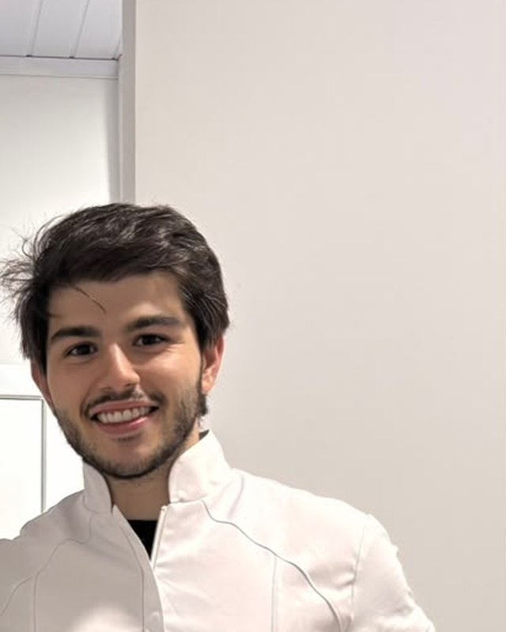
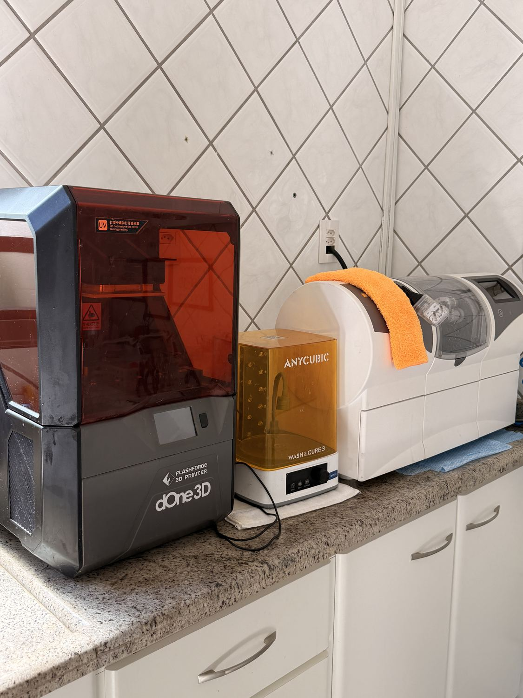
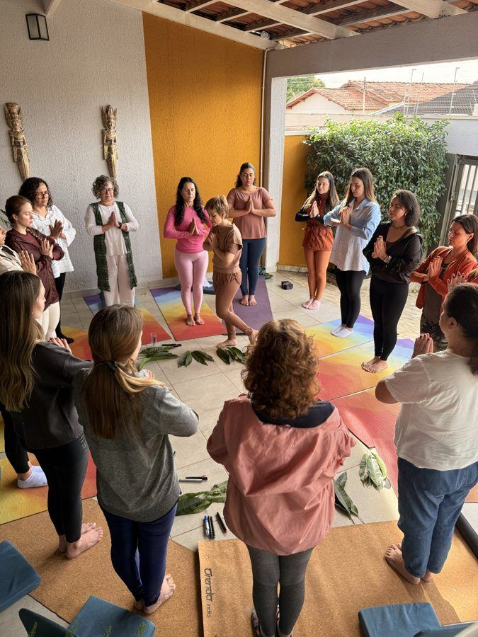
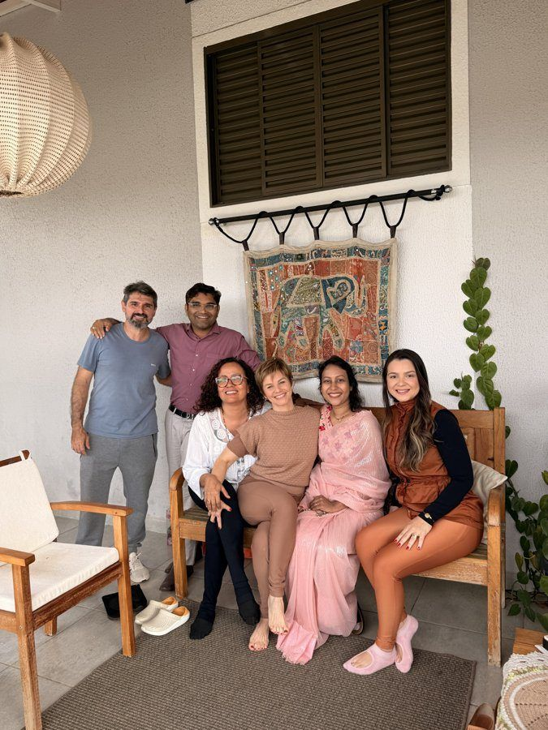

Uma varanda para esperar sem pressa.
A clínica é uma casa com jardim, e o jardim tem plantas medicinais. Quem chega primeiro respira, antes de qualquer coisa.


Antes da cadeira, tem um jardim. Antes do tratamento, tem conversa.
A clínica é uma casa com jardim, e o jardim tem plantas medicinais. Quem chega primeiro respira, antes de qualquer coisa.
Sofá, poltrona, chá quente e receitas caseiras. Muita gente chega com medo de dentista, e o ambiente ajuda a baixar a guarda.
Livros, peças trazidas da Índia e o cheiro dos óleos da aromaterapia. A casa tem a cara de quem cuida dela.
Consultórios equipados, planejamento digital e uma equipe que trabalha junta há muitos anos.
A GV Saúde tem o nome de quem a fundou: Gabriel e Vera. Cada um seguiu uma especialidade, e os dois atendem lado a lado.

“A GV Saúde foi idealizada para atender vocês como um lar.”Vera, no vídeo da clínica
Mestre em reabilitação oral pela UFU e especialista em Prótese Dentária pela UNESP. Há anos estuda o que está por trás do bruxismo e da dor na mandíbula, e foi buscar no Ayurveda, na aromaterapia e no yoga outras formas de cuidar.
CRO-GO 7513
“A extração de siso é a coisa que eu mais sou apaixonado em fazer.”Gabriel, no vídeo da clínica
Mestre em Cirurgia e Traumatologia Bucomaxilofacial pela UFU e especialista em Implantodontia. Foi plantonista de cirurgia de face na Santa Casa de Catalão por quinze anos e opera nos hospitais São Nicolau e Nasr Faiad.
Responsável técnico · CRO-GO 8020Gabriel se forma em Odontologia na UNESP.
Vera se forma na Universidade Federal de Uberlândia. No mesmo ano, Gabriel começa lá a especialização em cirurgia bucomaxilofacial.
Gabriel assume os plantões de cirurgia de face na Santa Casa de Catalão, onde fica até 2019.
Vera conclui o mestrado em reabilitação oral. Dois anos depois, a especialização em prótese.
Gabriel se especializa em Implantodontia e leva a odontologia digital para dentro da clínica.
Vera começa a formação em Ayurveda. Depois vêm a aromaterapia clínica, o yoga e cursos na Índia.
O filho, Rafael, cuida do planejamento digital e da impressão 3D enquanto termina a faculdade de Odontologia.

Hoje é dental designer: faz o escaneamento, o planejamento digital e a impressão 3D dos casos, e acompanha de perto o trabalho dos pais. Termina a graduação em Odontologia em 2027.
Vera e Gabriel contam como pensaram a GV Saúde e como é o dia a dia de cada um.

Aqui, você não é um prontuário. Você é uma história que merece ser ouvida.
Família GV Saúde
Da placa de bruxismo à cirurgia no hospital, o tratamento começa e termina com a mesma equipe.

Scanners, fresadora e impressoras 3D ficam aqui mesmo. O caso é escaneado, planejado no computador e produzido na clínica, e os implantes são colocados com cirurgia guiada. Menos espera, mais precisão, e você entende o tratamento antes de começar.
A clínica recebe turmas de yoga e encontros de bem-estar. Tensão e ansiedade aparecem na boca, no ranger de dentes, na dor no rosto. Cuidar delas ajuda o tratamento a durar.


E conta, do seu jeito, o que está sentindo ou o que quer mudar.
Avaliação completa, olhando também para hábitos, sono e tensão.
Com o especialista certo e planejamento digital quando o caso pede.
É a odontologia moderna somada a saberes como Ayurveda, aromaterapia e yoga. Além do tratamento clínico, olhamos para o que influencia a saúde da boca, como ansiedade, tensão muscular e qualidade do sono.
O Dr. Gabriel atende pela Unimed Catalão nos procedimentos cobertos pelo plano. A Dra. Vera atende de forma particular. Fale com a gente para confirmar o seu caso.
Vai além da placa tradicional: diagnóstico digital, placa feita sob medida no computador, aromaterapia clínica e orientações de rotina baseadas no Ayurveda. A ideia é tratar a causa.
É uma cirurgia minimamente invasiva da articulação da mandíbula, feita em hospital pelo Dr. Gabriel. É indicada em alguns casos de dor, estalo ou travamento que não melhoram com placa e outros tratamentos, sempre depois de uma avaliação.
Para cirurgias maiores, como a ortognática, e para quem não consegue fazer o procedimento no consultório, como crianças pequenas, pessoas com autismo, ansiedade severa ou condições neurológicas. Tudo com sedação assistida e a segurança do hospital.
Segunda a sexta, 10h às 18h
Sábado, 12h às 17h
Já é paciente? Conte no Google como foi o seu atendimento.